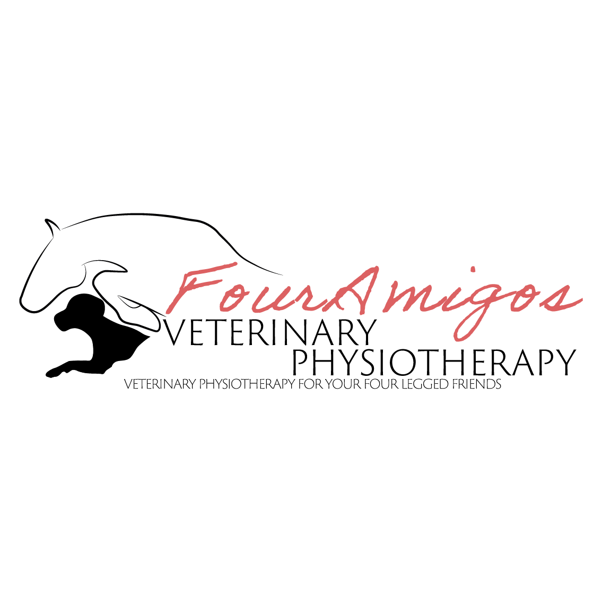
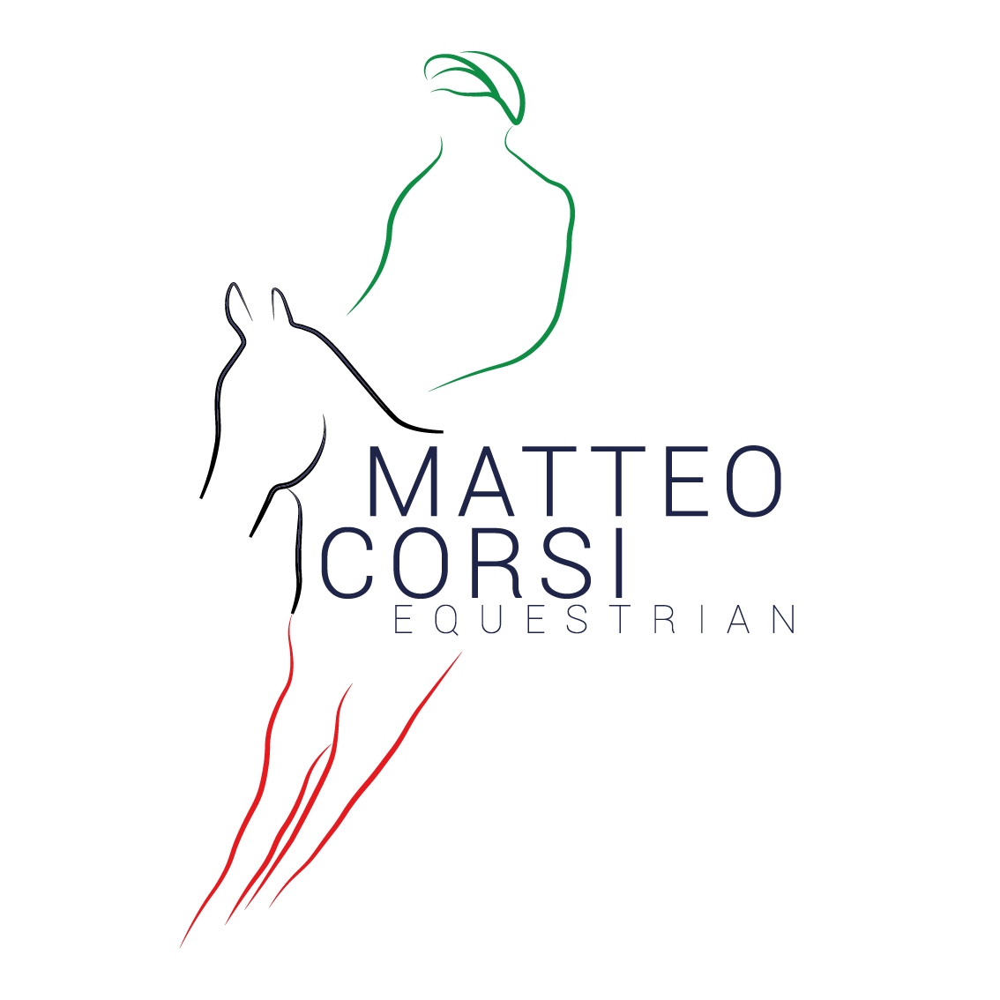
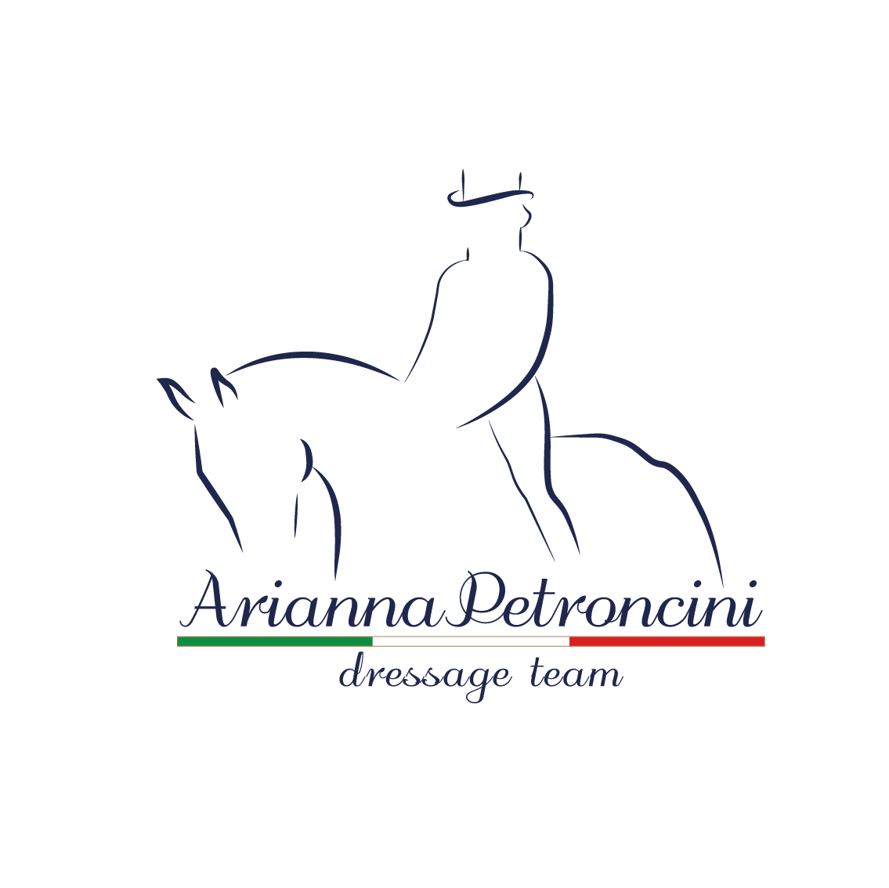
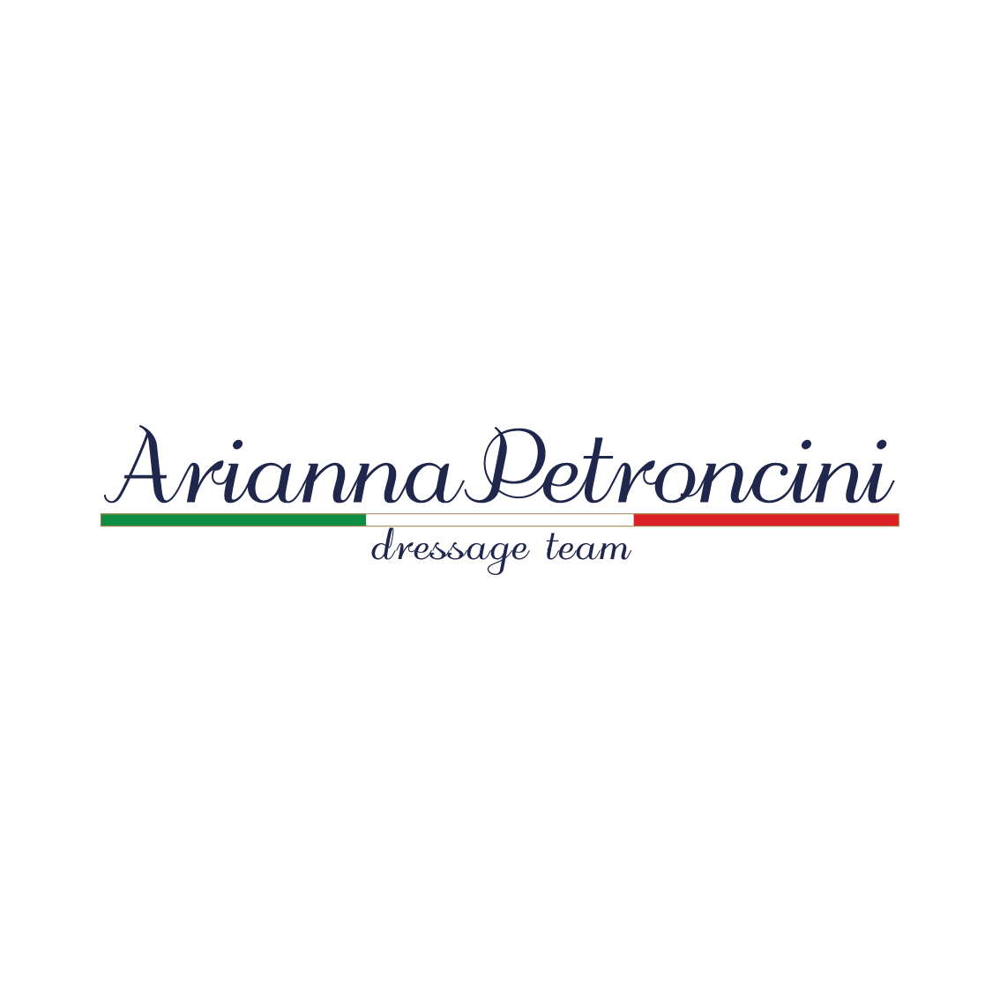
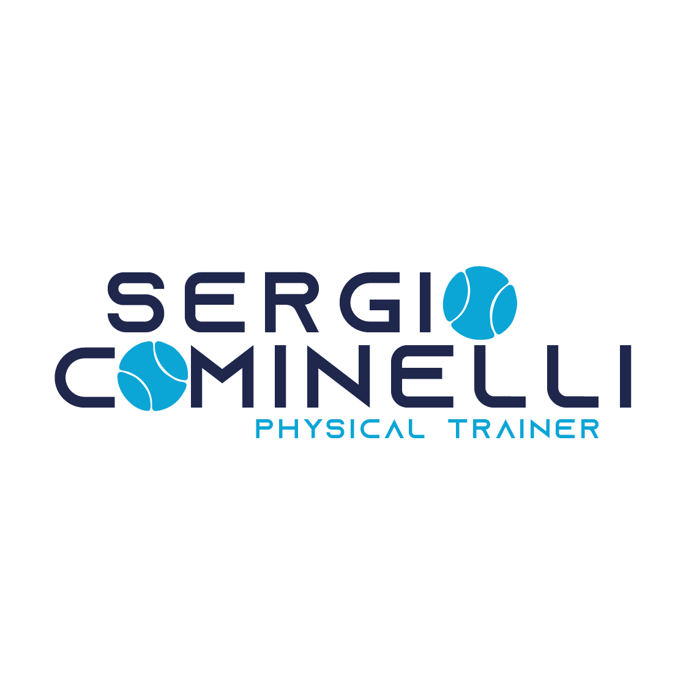

Four Amigos Animal Therapy is a heartwarming initiative that brings joy and comfort to individuals in need. With a team of four furry companions – two dogs and two cats – this unique therapy program offers emotional support, companionship, and a sense of well-being to those facing physical or emotional challenges. Whether visiting hospitals, nursing homes, or community centers, the Four Amigos work their magic by offering unconditional love and a soothing presence. Their wagging tails and gentle purrs brighten the lives of those they interact with, making Four Amigos Animal Therapy a beacon of hope and happiness for people seeking solace through the healing power of animals.
Four Amigos Veterinary and Physiotherapy is a comprehensive care center for our beloved animal companions. With a team of dedicated professionals, they offer top-notch veterinary services and specialized physiotherapy for pets in need of rehabilitation. Their commitment to the well-being of animals is unwavering, and they provide expert medical treatment and physical therapy to help pets regain their mobility and quality of life. Whether your four-legged friend is recovering from surgery, injury, or simply needs routine veterinary care, Four Amigos is the trusted destination for compassionate, skilled, and holistic care that ensures pets live their happiest and healthiest lives.
Matteo Corsi Equestrian is a renowned name in the world of horse riding and horsemanship. With a deep passion for these majestic animals, Matteo Corsi has dedicated his life to mastering the art of equestrian sports. His commitment to excellence is reflected in his exceptional training methods, which cater to riders of all levels, from beginners to advanced competitors. Whether it's dressage, show jumping, or general horse care, Matteo Corsi's expertise and teaching style create an enriching and transformative experience for both horse and rider. His equestrian center stands as a testament to his unwavering dedication to these magnificent creatures and the art of riding.
Matteos Second version
Arianna Petrocini Equestrian is a name synonymous with grace, skill, and a profound connection with horses. With a lifelong passion for equestrian sports, Arianna Petrocini has become a notable figure in the horse riding world. Her dedication to both her equine partners and the art of riding is nothing short of inspiring. Known for her exceptional training methods and a deep understanding of horse behavior, she imparts her knowledge to riders of all levels, fostering growth and harmony between horse and rider. Arianna's equestrian journey stands as a testament to her unwavering commitment to these majestic animals and the pursuit of excellence in the equestrian arena.
Arianna's second version
Sergi Cominelli is a highly regarded physical trainer, renowned for his expertise in fitness and performance enhancement. With a strong background in exercise science and a passion for helping individuals reach their physical potential, Sergi has earned a stellar reputation in the field. His innovative training techniques, tailored workout programs, and commitment to personalized guidance have made him a sought-after figure for athletes and fitness enthusiasts alike. Whether it's strength and conditioning, injury rehabilitation, or overall wellness, Sergi Cominelli's dedication to pushing boundaries and achieving optimal results is at the core of his training philosophy.